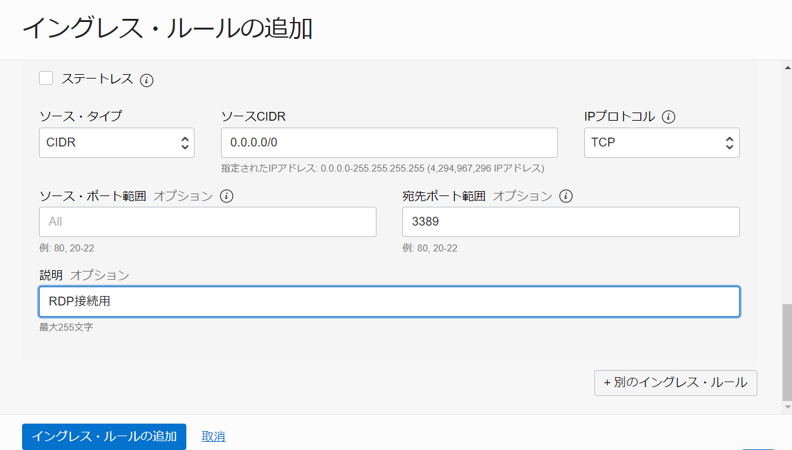
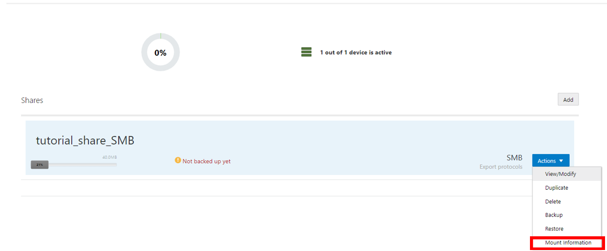
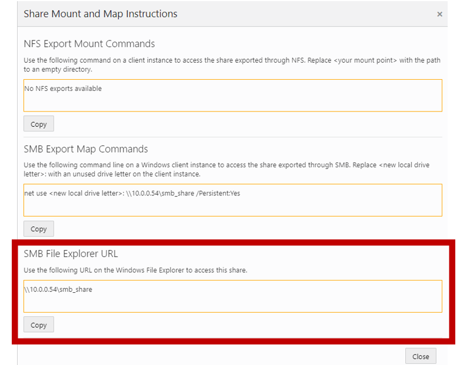
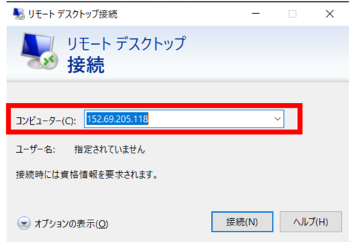
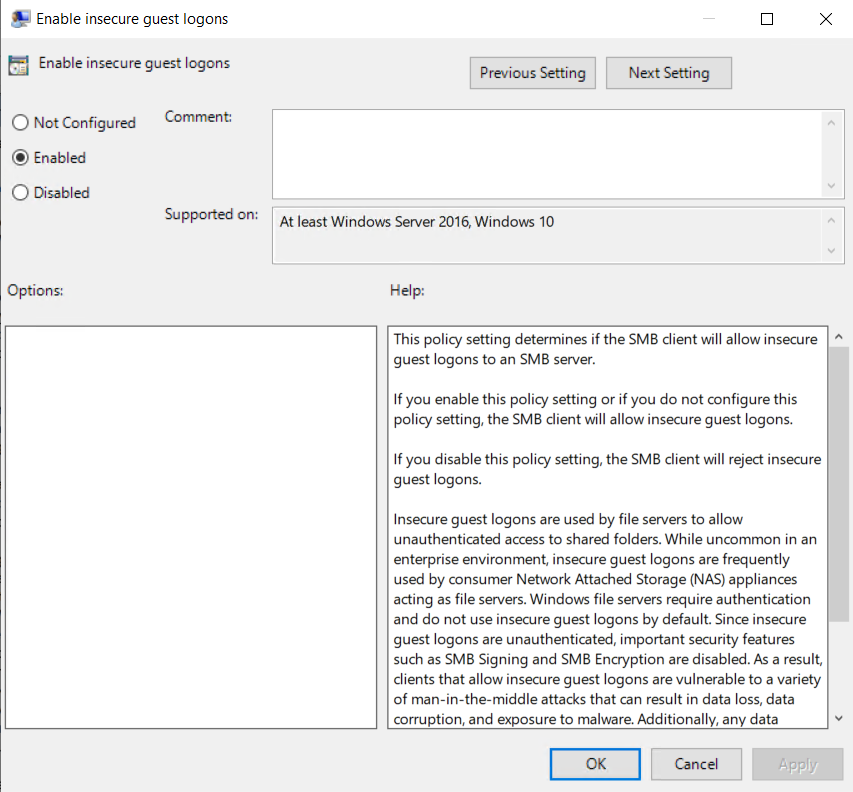

Oracle Linux Storage Applianceを使用することでOracle Cloud Infrastructure(OCI)上にWebインターフェースを使用して簡単に共有ファイルストレージを構築できます。その際にNFSv3、NFSv4そしてSMBv3のプロトコルを使用することができます。
今回のチュートリアルでは実際にOracle Linux Storage Applianceで共有ファイルストレージを作成して、OCI上にあるWindowsインスタンスからSMBプロトコルを介してアクセスしてみます。
チュートリアル一覧に戻る : Oracle Cloud Infrastructure チュートリアル
所要時間： 約30分
前提条件：
- その2 - クラウドに仮想ネットワーク(VCN)を作るが完了していること
- その4 - ブロック・ボリュームをインスタンスにアタッチするのブロック・ボリュームの作成を行っていること
注意: チュートリアル内の画面ショットについてはOracle Cloud Infrastructureの現在のコンソール画面と異なっている場合があります
1. 事前準備
1. インスタンス
-
Oracle Linux Storage Applianceを使用するために必要なインスタンスを作成します。その3 - インスタンスを作成するを参考にしてインスタンスを作成します。その際にイメージの変更ボタンをおしてイメージソースを
OracleイメージにしてOracle Linux Storage Applianceをクリックします。
-
OCI上のWindowsインスタンスでSMBの共有ファイルを確認するために、その3 - インスタンスを作成するを参考にしてWindowsインスタンスを作成します。
2. ブロック・ボリュームのアタッチ
Oracle Linux Storage Applianceを使用する場合はストレージ・プールを構成する必要があります。NVMeディスクを含むインスタンスの場合は自動で作成されますが、NVMeディスクがないインスタンスの場合はブロックボリュームをアタッチしなければなりません。
- ブロック・ボリュームをアタッチします。その4 - ブロック・ボリュームをインスタンスにアタッチするを参考にして、アタッチメントタイプを
ISCSIにしてアタッチしてください。
3. セキュリティリストの追加
VCNのセキュリティリストを追加する必要があります。今回の場合はOracle Linux stograge Applianceを利用する際に必要なポートとRDP接続をする際に必要なポートをセキュリティリストに追加します。Oracle Linux stograge Applianceを利用する際に必要なポートはこちらを参照してください。
-
ネットワーキング → 仮想クラウドネットワークをクリックします。するとVCNの一覧画面が表示されるので、インスタンスを作成した際に選択したVCNを選びます。 -
VCNの詳細画面が表示されるので、スクロールするとサブネットの一覧が表示されます。Oracle Linux stograge Applianceを作成するときに使用したサブネットを選択してください。（今回のチュートリアルではパブリックサブネット内に作成したため、パブリックサブネットを選択します。）
-
セキュリティリストが表示されます。VCNを作成した際にVCNウィザードの起動させて作成した場合は、パブリックサブネットの場合
Default Security List for＜VCN名＞、プライベートサブネットの場合プライベート・サブネット-<VCN名>のセキュリティ・リストが確認できます。今回はパブリックサブネット内に作成したのでDefault Security List for＜VCN名＞をクリックします。 -
するとイングレス・ルールをの詳細画面が表示されるので、Oracle Linux storage Applianceを使用する際に必要なポートとRDP接続をする際に必要なポートを許可します。
ステートレス- なしソース・タイプ- CIRD(デフォルト)ソースCIDR- VCNのCIDRを入力(今回のチュートリアルでは10.0.0.0/16)IPプロトコル- TCP (デフォルト)ソース・ポート範囲- 入力なし宛先ポート範囲- 22,111,135,139,443,445,662,2049,20048,32803説明- 任意（このチュートリアルではOracle Linux storage Appliance用）
-
別のイングレス・ルールのボタンを押します。そして以下を追加しますステートレス- なしソース・タイプ- CIRD(デフォルト)ソースCIDR- VCNのCIDRを入力(今回のチュートリアルでは10.0.0.0/16)IPプロトコル- UDPソース・ポート範囲- 入力なし宛先ポート範囲- 111,137-138説明- 任意（このチュートリアルではOracle Linux storage Appliance用）
-
また
別のイングレス・ルールのボタンを押します。RDP接続に必要なポートをセキュリティリストに追加します。ステートレス- なしソース・タイプ- CIRD(デフォルト)ソースCIDR- 0.0.0.0/0IPプロトコル- TCP (デフォルト)ソース・ポート範囲- 入力なし宛先ポート範囲- 3389説明- 任意（このチュートリアルではRDP接続用） 
-
全て追加したら
イングレス・ルールの追加を押します。するとイングレス・ルールの一覧から追加したものが確認できます。
2. SSHトンネルの作成
Oracle Linux Storage Applianceにアクセスするために、SSHトンネルを作成します。今回のチュートリアルではコマンドプロンプトを使用します。
-
インスタンスを作成した際に登録した公開鍵に対応する秘密鍵があるディレクトリに移動します。
cd <秘密鍵のファイルがあるディレクトリ> -
そしてSSHキーとインスタンスのパブリックIPアドレスを変えて下記のコマンドを入力します。
ssh -i <秘密鍵のファイル名> -v -N -L 8443:127.0.0.1:443 opc@<インスタンスのパブリックIPアドレス> -
初めて接続する場合は、本当に接続したいか聞かれるので
yesと入力します。
3. Oracle Linux Storage Applianceの使用
-
https://localhost:8443にアクセスします。初回のアクセスの場合に以下のようなプライバシーが保護されていませんとエラーが表示されることがあります。その場合詳細設定をクリックします。そしてlocalhostにアクセスする（安全ではありません）を押します。
-
パスワードの設定を行います。パスワードは8文字以上で一つ以上の大文字、小文字、数字、そして特殊文字を含める必要があります。

-
そうするとログイン画面が表示されるので、ログイン情報を記入します。
ユーザー名- adminパスワード- 設定したパスワードを入力
-
ログインすると先ほどアタッチしたボリュームが確認できます。チェックボックスにチェックを付けて
Createボタンを押します。すると本当にストレージプールを作成しても良いのか聞かれるのでOK押します。
-
ストレージプールが作成された後ダッシュボードが表示されます。ダッシュボードで共有可能なストレージ容量を確認することができます。

-
右上にある
Storageボタンを押して、addをおします。そして下記のように記入します。Share name- tutorial_share_SMB（任意の名前を指定してください）Share size- 40.0MBUse 32 bits inodes only- なし（デフォルト）Add export- SMB exportSMBSMB share name- smb_share（任意の名前を指定してください）Read only- なしBrowsable- なしStrict sync- なしHosts allowed- なしGuest ok- ありSync always- なしComment- なし-
Host dinied- なし
-
記載後
Createを押すと、共有が追加されたのを確認できます。 - 右下にある
ActionsからMount Informationをクリックします。  -
そして
SMB File Explore URLの箇所をコピーしてテキストエディタ等に書いておきます。  - Oracle Linux Storage Applicanceのインスタンスに任意のターミナルソフトを起動して、アクセスします。下記のコマンドでデバイスのマウント情報を確認を行います。すると先ほど作成した/shares/tutorial_share_SMBがマウントされていることが確認できます。
$ df -h Filesystem Size Used Avail Use% Mounted on devtmpfs 7.7G 0 7.7G 0% /dev tmpfs 7.7G 0 7.7G 0% /dev/shm tmpfs 7.7G 820K 7.7G 1% /run tmpfs 7.7G 0 7.7G 0% /sys/fs/cgroup /dev/sda3 39G 4.1G 35G 11% / /dev/sda1 200M 7.5M 193M 4% /boot/efi tmpfs 1.6G 0 1.6G 0% /run/user/0 tmpfs 1.6G 0 1.6G 0% /run/user/994 tmpfs 1.6G 0 1.6G 0% /run/user/1000 /dev/mapper/lsa-__lsa 58M 3.5M 55M 7% /.lsa /dev/mapper/lsa-tutorial_share_SMB 34M 2.2M 32M 7% /shares/tutorial_share_SMB -
共有ストレージ内にファイルを作成してみたいと思います。まずディレクトリを移動します。
$ cd /shares/tutorial_share_SMB -
そしてファイルを作成します。今回のチュートリアルではtest.txtファイルを共有ストレージファイル内に作成します。
$ touch test.txt
4. Windowsインスタンスから共有フォルダにアクセス
-
左上にあるメニューボタンから
コンピュート → インスタンスをクリックします。そして、既存のWindowsインスタンスを選択します。 -
するとWindowsインスタンスの詳細画面が表示されるので、インスタンス・アクセスの下に書いてあるパブリックIPアドレス、ユーザー名、初期パスワードをテキストエディタ等に書いておきます。

-
Windowsキーを押して、Windowsアクセサリの配下にあるリモートデスクトップ接続を選択します。

-
リモートデスクトップ接続をする画面が表示されるので、コンピューターの箇所にWindowsインスタンスのパブリックIPアドレスを記載します。 
-
リモートデスクトップに接続する際に、このリモートコンピューターのＩＤを識別できませんが接続しますかというような下記の表示が出てきたら
はいのボタンを押してください。
-
リモートデスクトップに接続ができると、パスワード情報を入力する必要があります。先ほど確認した初期パスワードを入力してください。

-
パスワードの入力後、新しいパスワードに変えるように要求されるので、
OKボタンを押して新しいパスワードを2回入力して、変更します。
-
ログインできたら、エクスプローラーを出し、
Networkをクリックします。もし、Network discoveryとfile sharingが無効になっていますという表記が表示されたら click to chanageの箇所をおして、Turn on network discovery and file sharingをクリックします。すると本当に有効にしたいか聞かれるのでyesから始まる文章の方をクリックします。
-
先程確認した
SMB File Explore URLを記入します。きちんとアクセスできると先程作成したtest.txtを確認することができます。
5. 補足（Networkエラーが発生した場合）
もし、エクスプローラーに SMB File Explore URL を記載しても、うまく接続出来なかった場合は以下の手順を実施してください。
-
Windows+Rを押してgpedit.mscを選択します。
-
Computer Configuration\Administrative Templates\Network\Lanman Workstationを開きます。そしてEnable insecure guest logonsをクリックします。
-
すると
Enable insecure gures logonsの詳細が表示されるのでNot ConfiguredからEnableにしてください。そしてApplyを押します。
-
ボタンを押したのち、エクスプローラーに
SMB File Explore URLを記入してください。するとアクセスできます。
以上で、この章の作業は終了です。
チュートリアル一覧に戻る : Oracle Cloud Infrastructure チュートリアル